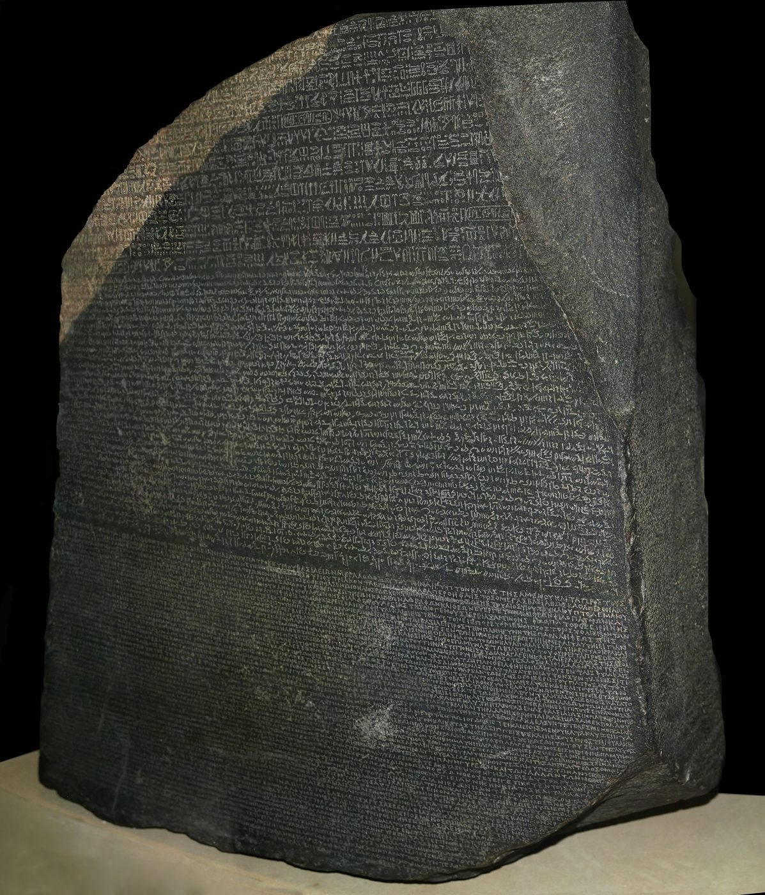

Unit 5 · Historical investigation · Lesson 8
Synthesis: making sources talk to each other
How do you build one claim from several sources, and know whether they really support each other?
Year 11 Ancient History · Present with → or space · Read on a phone with R

Connect · 3 minutes · books closed · everyone writes · press K for the timer
From last lesson: reporting verbs
Name one reporting verb that doubts and one that supports.
Then compare with a partner’s, and fix one thing.
One that doubts: claims, alleges or asserts. One that supports: confirms, demonstrates or is corroborated by.
Last lesson’s model used a neutral verb for Herodotus: he reports what Egyptians told him. Today’s verbs join two sources: is corroborated by is one of them.
Learning intentions and success criteria · 2 minutes
Today’s goals
- synthesise evidence from several sources
- judge whether sources independently support a claim
- complete a synthesis grid for one sub-question
- tell corroboration from repetition of the same evidence
- join two sources in one sentence with a synthesis connective
Syllabus outcomes: AH-11-05 analyses different types of sources for evidence to support a historical account or argument · AH-11-06 explains differing interpretations and representations of the past · AH-11-08 plans and conducts historical investigations and presents conclusions, using evidence from a range of sources. Life Skills: AH-LS-10 compares representations of the past · AH-LS-11 communicates information about the past using historical terms and concepts.
Note-making · the routine for the whole course
How to structure your notes
questions and key terms, written after
short phrases, arrows (→ leads to), abbreviations (c. = about; BCE = Before the Common Era)
- 1A new lesson, a new pageA cue column about a quarter of the page wide; title and date at the top; room for a summary at the bottom.
- 2Listen and look, then writeDon’t copy while a slide is being explained. Phrases, not sentences.
- 3Write your own notes at the ✎ checkpointThen compare with the model notes, one row at a time. Add what you missed in a second colour.
- 4Write the cue questions afterwardsUse exam verbs: describe, explain, assess. To revise, cover your notes and answer the cues.
- 5Your grid is separateNotes hold what you learn; the synthesis grid holds what your sources say about one sub-question. One checkpoint today: synthesis.
Key vocabulary · add to the unit word wall
Words for synthesis
| Verb (NESA) | Meaning · what the answer does |
|---|---|
| Synthesise | ‘Putting together various elements to make a whole.’ — Build one claim from several sources. |
| Writing terms | Meaning |
| Reporting verb | A verb that says who claims what, and how: states, claims, confirms, presents … as. |
| Synthesis connective | A word that joins sources: similarly, whereas, is corroborated by, complicates. |
| Research terms | Meaning |
|---|---|
| Corroboration | Support for a claim from an independent source. |
| Added today | Meaning |
| Synthesis grid | A table with your sub-questions down the side and your sources across the top. Each cell says what the source says, and whether it agrees, disagrees or adds. |
| Independent source | A source that reaches a claim from different evidence. A source that repeats or reports another’s evidence is dependent. |
1 · Synthesis · I do — the same three sources, written two ways · then cold call
The same evidence, written as a summary and as a synthesis
Sub-question on the class investigation: How were the crews fed? · both paragraphs · written for this lesson
Herodotus reports that an inscription on the pyramid recorded the cost of the workmen’s radishes, onions and garlic (Herodotus 2.125). The Ministry of Tourism and Antiquities reports huge quantities of animal, bird and fish bones from the builders’ town (Ministry of Tourism and Antiquities (Egypt) n.d.). AERA describes bakeries, kitchens and royal grain silos in the same town (Ancient Egypt Research Associates n.d.).
The sources agree that the crews’ food was organised, but they describe different meals and different reigns. Herodotus reports that an inscription recorded the cost of the workmen’s vegetables (Herodotus 2.125), whereas the animal bones from the builders’ town point to meat as well, which the Ministry takes as a sign of a state that kept its workers healthy (Ministry of Tourism and Antiquities (Egypt) n.d.). While the royal grain silos and bakeries suggest that the crown supplied the town’s bread and beer, AERA links the town to Menkaure and Khafre and to Khufu only as ‘probably’ (Ancient Egypt Research Associates n.d.). Taken together, the sources suggest that the crown fed its crews, although none of them shows how much each worker received.
A claim first, and how the sources relate to it
Whereas: a difference, set side by side
While …, …: two points set side by side: what the silos suggest, against how firmly AERA dates the town
Taken together …, although: a joint claim, with its limit
Which paragraph tells a reader more about how the crews were fed, and why?
The synthesis. It makes one claim, shows where the sources agree and differ, and says what the evidence cannot show. The summary leaves the reader to do all of that.
1 · Synthesis · I do — one row of the grid, filled aloud · then cold call
The synthesis grid: one row, filled aloud
| Sub-question | Herodotus 2.124–125 | AERA (n.d.) | Ministry (n.d.) | Weiss (2022) |
|---|---|---|---|---|
| How were the crews fed? | starts the claim An inscription recorded the cost of the workmen’s radishes, onions and garlic (an interpreter read it to him). | agreesadds The crown built a town with royal grain silos, bakeries and kitchens: where the food was made. | agreesadds Many animal bones, so meat as well; it reads them as the state keeping workers well fed. | agreesadds Merer’s team, in Khufu’s reign, was given bread and beer, and a menu that also had poultry, fish and fruit. |
| What the row lets me claim | The crown probably supplied food to at least some crews. The best evidence from Khufu’s own reign is Merer’s papyri; the town’s evidence belongs mainly to later kings. Partial support for Herodotus, not proof. | |||
Every cell agrees, so why does the row claim only partial support?
Because they agree only that someone supplied the crews’ food. They describe different meals (vegetables, meat, bread and beer), and the town’s evidence belongs mainly to later kings. The only food evidence written in Khufu’s reign is Merer’s, for one team.
Tag each cell: agrees disagrees adds
1 · Synthesis · I do — do two sources rest on the same evidence? · then cold call
Corroboration or repetition? Test for independence
Two sources corroborate each other only if they are independent: they reach the claim from different evidence. A source that repeats, reports or copies another is the same evidence again.
- Ask of each source: how did the writer know?
- Ask: is that the same way the other writer knew?
Why does a repeated claim count for less than an independent one?
A repeated claim is one witness heard twice. If the first is wrong, the second is wrong in the same way. Independent sources are less likely to share one mistake, so their agreement counts for more, although they can still share a bias or an assumption.
| Pair | Do they rest on the same evidence? |
|---|---|
| Herodotus 2.125 and the Ministry’s animal bones | Independent. Herodotus reports what an interpreter read to him, more than 2,000 years after Khufu; the bones were dug up at Giza. Different evidence, so a match is worth something. Limit: the bones come from a town linked mainly to Khafre and Menkaure. |
| AERA and the Ministry, on the builders’ town | Can’t tell yet. Both describe the same town, and the Ministry’s page does not say who dug it. Until we know, treat them as one body of evidence, not two. |
| AERA and Weiss (2022), on the town’s bakeries and bones | Not independent. Weiss reports the excavation by Lehner, the director of AERA. The magazine is the excavator’s evidence again, not a second witness. |
2 · We do · pairs complete row 2, then the class decides · then cold call
Row 2: How were the crews organised?
They worked in gangs of a hundred thousand men, each gang for three months.
Herodotus, Histories 2.124 · he reports what Egyptians told him, more than 2,000 years after Khufu · trans. A. D. Godley (Loeb, 1920), as revised by the Perseus Digital Library
… a group of some 40 men, known as a phyle …
Weiss (2022), Archaeology · the logbooks of Inspector Merer, from Wadi al-Jarf, in the last years of Khufu’s reign: his phyle was one of four in a larger team, and its boat brought limestone from Tura to Giza
- Fill the Herodotus and Weiss cells for How were the crews organised? Tag each: agrees · disagrees · adds.
- Are the two sources independent?
- Corroboration, complication or both?
Tags: Herodotus starts the claim; Weiss agrees (crews in units) and adds (one unit’s size and job). The sizes differ, but the two may count different units, so neither cell is a plain disagrees. Corroboration: both describe crews organised in units, not one mass of workers (gangs; a phyle that was one of four). Complication: the sizes differ (100,000 is Herodotus’s claim, about 40 is Tallet’s reading of the papyri, and they may count different kinds of unit), and so does the work (Herodotus’s gangs drag stone, which boats carry over the Nile between two stages; Merer’s crew ships limestone down the Nile). Independent: yes. Herodotus relays what he was told long after; the papyri are a logbook from the time, reported by Weiss from Tallet’s reading.
So the row lets me claim that the work was organised in units, not that Herodotus’s picture of it is right.
Notes checkpoint
Synthesis
3 · You do · Writing focus · 7 minutes · I do → We do → apply
Writing focus: join two sources in one sentence
A synthesis connective joins two sources in one sentence and says how they relate: agree (similarly, both … and …, is corroborated by) · differ (whereas, while …, …) · limit (although) · combine (taken together). Cite each source where you use it, and hedge once.
Worked example · written for this lesson, on the class question
Herodotus’s report of an inscription that recorded the cost of the workmen’s radishes, onions and garlic (Herodotus 2.125) is partly corroborated by the animal bones found in the builders’ town (Ministry of Tourism and Antiquities (Egypt) n.d.), since both suggest that the state supplied the crews’ food, although the bones point to a richer diet and come from a town that the Ministry links mainly to Khafre and Menkaure, who ruled after Khufu.
First source, cited
Connective: agrees, hedged (partly)
Second source, cited
Connective: the limit
Frame: ‘[First source] … is partly corroborated by [Second source], although …’
Write the first of your two joined sentences from your own grid, with the frame or another connective that fits. Your Writing toolkit (booklet pages 3–4): connectives by function.
Which connective fits each? Hold up A, B, C or D on “3, 2, 1, show”.
- 1Merer’s papyri support Herodotus’s picture of crews working for the king, ? Tallet thinks Merer’s boatmen were a special category. C although: part support, with a limit on one team standing for all.
- 2Herodotus has the king organise the work; ?, AERA describes a town the crown built for the work. A similarly: the same point from two sources.
- 3?, the town’s bakeries and Merer’s bread and beer rations suggest that the crown supplied its crews’ food. D taken together: two kinds of evidence, one joint claim.
- 4? Herodotus heard about the work more than 2,000 years later, Merer’s papyri are a logbook kept at the time. B whereas: two origins, set side by side; neither limits the other.
3 · You do · reference page · keep it open while you work
Your synthesis grid and connective bank
The grid · one sub-question per row · a filled row is the class model in ‘The synthesis grid: one row’
| Sub-question | Source 1 | Source 2 | Source 3 | Same evidence? |
|---|---|---|---|---|
| says … · agrees / disagrees / adds | says … · tag | says … · tag | How did each writer know? | |
| What the row lets me claim | One sentence, with its hedge and its limit. | |||
Both sources named, and each cited where used? A connective that fits how they relate? An accurate reporting verb? One hedge per claim? Does it say what the evidence cannot show? Are the two sources independent?
Connectives by function
| They … | Use |
|---|---|
| agree | similarly · likewise · both … and … · is corroborated by · is supported by |
| differ | whereas · while …, … · unlike · in contrast · however |
| add | also · goes further · adds that |
| limit | although · yet · but · complicates |
| combine | taken together · together, these suggest · on balance |
- [A] … is partly corroborated by [B], although …
- Whereas [A] …, [B] …
- While [A] …, [B] …
- Taken together, [A] and [B] suggest that …, although …
Your Writing toolkit (booklet pages 3–4): connectives by function.
3 · You do · 27 minutes, including the Writing focus apply · check first · press K for the timer
You do: a synthesis grid for your own sub-question
- Write one of your sub-questions at the top of a grid, and your sources across it (from your annotated source list).
- For each source, write what it says about that sub-question and tag it: agrees · disagrees · adds. Mark any pair that rests on the same evidence.
- Write two sentences that each join two sources with a connective, citing both. The first is your Writing focus apply.
- Complete your annotated source list (reference, OVPRL note, what it offers) and hand it in.
Both sources named and cited? The connective fits? One hedge? The limit stated? The two sources independent?
Check first: what does this task ask you to do?
Verb: synthesise, NESA: ‘Putting together various elements to make a whole.’ Topic: what your sources say about one sub-question. Limits: at least two sources in each sentence, each cited in author–date style, from your own annotated list. Do: join them with a connective into one claim, with its hedge and its limit. Don’t list them one by one.
The grid with the class row filled in as a pattern, and the connective bank grouped by function.
Find a case in your topic where two sources seem to agree but depend on the same earlier source. In your log, explain what that does to the strength of your claim.
Exit ticket · 6 minutes · before you leave
Your strongest corroboration
Finish the sentence for your own topic, then check it against today’s three “I can” statements.
My strongest corroboration is … and …, because they are independent: …
two sources named, ideally of different kinds; the claim both support; and why they are independent: they reached it from different evidence, and neither reports or repeats the other. A strong answer also names a limit, such as a different date, place or purpose.
Next lesson: claims from limited evidence, hedging and the synthesis paragraph.
Finish your notes If time · or at home
Summary: three sentences
- How does a synthesis differ from a summary?
- How do you tell corroboration from repetition?
- How do connectives join two sources, and what must every joined sentence do?
A synthesis builds one claim from several sources and shows them in conversation, where a summary reports them one at a time and leaves the reader to join them. Two sources corroborate each other only if they are independent, so a source that repeats or reports another’s evidence is the same evidence again, which a synthesis grid helps me see by tagging every cell as agreeing, disagreeing or adding. Connectives join two sources by how they relate, such as both … and … to agree, whereas to differ, although to limit and taken together to combine, and every joined sentence names and cites each source, keeps one hedge and states what the evidence cannot show.
Practice and review · 1 of 3 · true, false, justify
True or false? Justify your answer
- 1A paragraph that reports each source in turn, with a citation for each, is a synthesis. False — it is a summary. Each fact is cited, but nothing joins the sources or says what they show together.
- 2A magazine article that reports what an excavator found is a second, independent witness to those finds. False — it reports the excavator’s evidence, so it is one witness heard twice. Ask: how did each writer know?
- 3‘Whereas’ is the best connective to show that two sources make the same point. False — whereas sets two sources side by side as a contrast. For the same point, use both … and … or similarly.
- 4‘Taken together, …’ should come after you have shown what each source says. True — it draws a joint claim from sources already shown. With none shown, it is only an opinion.
- 5When two sources give different numbers, a synthesis should pick one and leave the other out. False — report both, attributed, say why they may differ (for example, an ancient claim against a reading of a papyrus), and say what the difference means for the claim.
- 6A sentence that joins two sources needs a citation for each one. True — cite each source where you use it, so a reader can check each claim.
Practice and review · 2 of 3 · writing
Synthesise two sources on the Assyrian question
The question is the closed practice question, Why did the Assyrian Empire collapse in the late 7th century BCE? Two sources:
Livius.org (2020), the Babylonian Chronicle: ‘From the month Simanu until the month Âbu - for three months - they subjected the city to a heavy siege.’
Sinha et al. (2019), a cave climate record from northern Iraq, Science Advances: ‘… megadroughts during the early-mid seventh century BCE … triggered a decline in Assyria’s agrarian productivity and thus contributed to its eventual political and economic collapse’
Say what each source says, tag it (agrees · disagrees · adds), say whether the two are independent, and say what the row lets you claim.
Chronicle: the Medes and Babylonians besieged Nineveh for three months and ruined the city: a military ending (adds: how it fell). Sinha et al.: decades of drought earlier in the century cut farm output and contributed to the collapse: an environmental cause (adds: why the empire was weak). Independent? Yes: a cuneiform chronicle and a climate record from a cave are different evidence. Claim: defeat ended Nineveh, and drought probably weakened the empire first; neither source alone explains the collapse.
Write one sentence that joins the two sources with a synthesis connective (try While [A] …, [B] …), cites both, and keeps one hedge. Don’t patchwrite.
While the Babylonian Chronicle records that the Medes and Babylonians besieged Nineveh for three months before it fell (Livius.org 2020), Sinha et al. (2019) argue that decades of drought earlier in the seventh century BCE had cut the empire’s farm output, which suggests that military defeat ended an empire that was already weakened.

Practice and review · 3 of 3 · cover your notes and answer from memory
Quick checks
- Explain the difference between a summary and a synthesis. A summary reports sources one at a time and leaves the reader to join them; a synthesis builds one claim from several sources, shows them in conversation with connectives, and says what the evidence cannot show.
- What does each cell of a synthesis grid say, and what are the three tags? What that source says about that sub-question; agrees, disagrees or adds.
- How do you test whether two sources corroborate each other? Ask how each writer knew. If they reached the claim from different evidence they are independent, and a match counts; if one repeats or reports the other, it is the same evidence again.
- Name a connective for each relationship: agree, differ, limit, combine. Agree: both … and …, is corroborated by, similarly. Differ: whereas, while …, …. Limit: although, yet, complicates. Combine: taken together.
- Why must you cite each source where you use it, even in one joined sentence? So a reader can check each claim against its source, and so that you do not credit one source with what the other said.
- What does ‘partly corroborated’ tell a reader? That the sources support the claim in one respect but not another, so you must say which respect, and what the limit is.
Sources and credits
Where everything comes from
Herodotus, Histories 2.124 and 2.125: A. D. Godley’s translation (Loeb, 1920), as revised by the Perseus Digital Library (CC BY-SA 3.0 US). NESA, Glossary of key words (definition of synthesise quoted word for word) and Ancient History 11–12 Syllabus (2024). © NESA.
Facts: Ancient Egypt Research Associates, “The Lost City of the Pyramids (Heit el-Ghurab)”; Egypt’s Ministry of Tourism and Antiquities, “Workers’ Town and Cemetery”; D. Weiss, “Journeys of the Pyramid Builders”, Archaeology (July/August 2022), which reports P. Tallet’s reading of the Wadi al-Jarf papyri and M. Lehner’s excavation at Heit el-Ghurab; Livius.org, “ABC 3 (Fall of Nineveh Chronicle)”; A. Sinha et al., “Role of climate in the rise and fall of the Neo-Assyrian Empire”, Science Advances 5(11) (2019), doi:10.1126/sciadv.aax6656 (open access; quoted briefly). The practice and the examples are written for this lesson. Every page was checked on 27 November 2026.
Outcomes and content: NSW Education Standards Authority (NESA), Ancient History 11–12 Syllabus (2024). © NESA.
- The Rosetta Stone · Photo: Hans Hillewaert · CC BY-SA 4.0 · source
- Clay tablet with part of the Babylonian Chronicle, the years 616–609 BCE (British Museum, 1896,0409.6) · Photo: Zunkir · CC BY-SA 4.0 · source


All images are public domain or openly licensed, and were resized or cropped for the web. Each is shared under the licence shown.